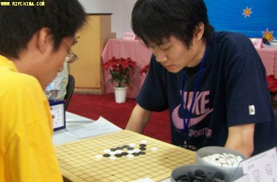

曹冬专访（三）：棋路历程
#1 曹冬专访（三）：棋路历程 作者：被感动的人 发表时间：2011-8-25 21:41:03
上接曹冬专访（二）：赛场风云
棋路历程

感动： 所以夺冠不仅仅需要强大的实力和充足的准备，还需要那么一点点运气。 [ 笑 ] 你的好友印象特别有意思。我记得你有好几条好友印象都是“黑石、黑石 3.82 、连珠终结者”一类的，国内大家都认为你是更偏向计算型的棋手，记得有一次大赛你还被人打趣成“在一群谱库里裸奔”，但是我看过你所有的棋评，感觉你对定式啊还有很多走法的结论和见解也很透彻啊。你从棋手的角度怎么评价自己的技术特点？
曹冬：
/*760*90，创建于2012-2-9*/ var cpro_id = 'u761865';
#2 Re:曹冬专访（三）：棋路历程 作者：小红眼镜 发表时间：2011-8-25 21:56:52
占楼。。。
#3 Re:曹冬专访（三）：棋路历程 作者：蓝天蓝 发表时间：2011-8-25 22:07:52
板凳#4 Re:曹冬专访（三）：棋路历程 作者：连心 发表时间：2011-8-25 22:08:57
地板#5 Re:曹冬专访（三）：棋路历程 作者：五连达人 发表时间：2011-8-25 22:47:47
顶
#6 Re:曹冬专访（三）：棋路历程 作者：黑白之巅 发表时间：2011-8-25 22:49:59
天花板。。。。
谢谢被感动的人精彩的访谈，果断搬到连珠吧
#7 Re:曹冬专访（三）：棋路历程 作者：小元 发表时间：2011-8-26 12:54:12
现在抢楼抢沙发的真多
#8 Re:曹冬专访（三）：棋路历程 作者：魔铃 发表时间：2011-8-26 14:34:34
哇 偶像要做专职讲师或有机会做全职棋手咯
#9 Re:曹冬专访（三）：棋路历程 作者：尕孩 发表时间：2011-8-27 1:48:50
如殷立成先生這樣…慢慢減緩比賽，在教育和普及等工作上繼續五子棋的追求和激情…是不是也很好呢#10 Re:曹冬专访（三）：棋路历程 作者：小痴痴 发表时间：2011-8-27 7:47:07
五子棋手的颠峰是几岁呢，一般棋类超过30岁的就要下滑了吧#11 Re:Re:曹冬专访（三）：棋路历程 作者：以和为贵 发表时间：2011-8-29 10:00:16
引用：
原文由 小痴痴 发表于 2011-8-27 7:47:07 :
五子棋手的颠峰是几岁呢，一般棋类超过30岁的就要下滑了吧
因人而异。